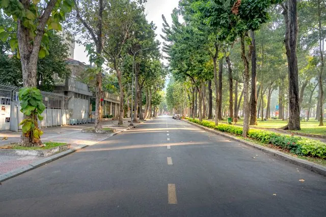

Collect ideas
Edit Phase
Phase name
Dates
05/20/2026 12:00 AM›06/10/2026 11:59 PM
Participants can submit ideas the whole time this phase is running. Submissions feed the next phase, where the city shares back what it heard.
What do you want to do?
Each phase runs exactly one participation method.
Collect responses on paper or imported from other tools, and add them later from the Input manager.
User anonymity
Allow users to participate anonymously
Users won't be able to track their identity from their input; project managers won't see who submitted what.
Actions for users
Submitting posts
Commenting on posts
Reacting to inputs
Similar input detection
Enable similar input detection
Warn participants when their input looks like one that already exists.
Similarity threshold (title)
Similarity threshold (body)
Available views
Description
What participants see explaining this phase. The rich page content is edited in the content builder.
Input manager
Submitted ideas appear here once the phase is live.
Input form
Configure the fields participants fill in when they submit an idea.
Map
Show inputs on a map by location.
Insights
AI analysis and participation stats appear here.
Phase access and user data
Control who can participate and what data you collect.
Notifications
Automated emails sent during this phase.
New phase
Add a new phase to your project's timeline. Each phase runs exactly one participation method.
Phase name
Dates
Select start date›Select end date
What do you want to do?
Pick a method for this phase.
New survey
Surveys here run outside your project's timeline, in parallel with the phases.
Survey title
Dates
Start date›End date (optional)
Button text
Collect responses on paper: print, distribute, and scan forms back. AI reads the handwriting automatically.
General settings for the project
Set up and personalize your project.
Project name
Homepage description
Shown as a short tagline on cards and lists.
https://internal.govocal.com/en/projects/reimagine-meridian-2030
Help residents find projects by theme.
Area filter
Controls how this project surfaces in area filters across the platform.
No specific area
The project will not show when filtering by area.
All areas
The project will show on every area filter.
Selected areas
The project will show on selected area filter(s).
Project context
Where this project lives in your folder structure.
Inside a folder
Group this project with related ones.
Standalone
The project is not in a folder.
Max 50MB per file.
Input tags
Tags residents use to categorize their inputs in this project.
Perspectives NEW
AI-powered tagging overrides your manual tag definitions. Tags will be created, updated, and assigned automatically.
At least one tag is required. If you do not wish to use tags, the 'Tags' item can be deleted from any phase's input form.
Mobility & transport
Public spaces
Other
Access rights
Control who can find and see this project.
Who can find this project?
Select how discoverable this project is.
Listed
This project is visible to everyone who has access, and will appear on the homepage and in the widgets.
Unlisted
This project will be hidden from the wider public, and will only be visible to those who have the link.
- Not visible on the homepage or widgets
- Not indexed by search engines
- Email notifications only sent to participants
- Only accessible via direct URL
Who can see this project?
Anyone
Administrators and the managers of this project
Selection
Select one or more groups
Data
Manage participation data and project state.
Clear all participation data
Removes all ideas, comments, votes, reactions, survey responses, poll responses, volunteers, and event registrants from this project. For voting phases, votes are cleared but options remain.
This action cannot be undone.
Participants
Get an overview of the participants for this project that have an account. Anonymous participation is not accounted for.
Select
| Name | Role | Last active | Joined | Options | |
|---|---|---|---|---|---|
| Noah Bergströmnoah.bergstrom@meridian.co | Project managerAssigned items | 4 months ago | August 27, 2024 | ||
| Hannah Adamshannah.adams@gmail.com | Registered user | 2 days ago | December 4, 2023 | ||
| Pamela Reyespreyes@outlook.com | Registered user | 1 week ago | November 7, 2023 | ||
| Marcus Lindqvistm.lindqvist@meridian.co | Platform adminAssigned items | 52 minutes ago | September 24, 2023 | ||
| Sarah Hamids.hamid@meridian.org | Registered user | 3 weeks ago | September 21, 2023 | ||
| Caleb Mensahcaleb.mensah@gmail.com | Registered user | 3 weeks ago | September 21, 2023 | ||
| Ingrid Halvorseningrid.h@meridian.co | Registered user | 1 month ago | September 21, 2023 | ||
| Ben Gordonben.gordon@outlook.com | Registered user | 1 month ago | September 21, 2023 |
Demographics
A breakdown of the registered participants in this project, based on the fields they filled in at registration.
Age
18–2414%
25–3431%
35–4424%
45–5416%
55–649%
65+6%
Gender
Female51%
Male43%
Other3%
Unspecified3%
Domicile
Meridian Central38%
North Quarter27%
Riverside21%
Outside Meridian14%
Traffic
See how people reach this project and how engaged they are.
3,184Visitors
5,902Visits
2:14Avg. time on project
1.9Pages per visit
Where visitors come from
Direct entry41%
Social networks28%
Search engines19%
Campaign emails12%
Custom emails
Send custom emails to the participants of this project and track their engagement.
📣 Reimagine Meridian 2030 is live — share your ideas
Sent · Sent to 170 recipients · 14 May 2026 · 62% opened
🗳️ Voting is open: help pick the shortlist
Sent · Sent to 148 recipients · 2 Jun 2026 · 58% opened
Automated emails
Automated emails are sent out automatically, triggered by a participant's actions. Some can be turned off; required ones cannot.
Status change of your input
A participant whose idea changes status · Immediately when an admin changes the status
Comment on your input
A participant whose idea receives a comment · Immediately when a comment is posted
Project phase started
All project participants · When a new phase begins
Project events
Link upcoming events to this project and show them on the project's events page.
To email registrants directly from the platform, admins must create a user group in the Users tab. See the support article.
Mobility town hall
Central Library, Meridian
14 June 2026 7:00 PM → 14 June 2026 9:00 PM
14 June 2026 7:00 PM → 14 June 2026 9:00 PM
41 registrants
Neighbourhood design workshop
Meridian Civic Hall
2 July 2026 6:00 PM → 2 July 2026 8:00 PM
2 July 2026 6:00 PM → 2 July 2026 8:00 PM
57 registrants
Initial information session
Online · Streamed
10 March 2026 1:00 PM → 10 March 2026 2:00 PM
10 March 2026 1:00 PM → 10 March 2026 2:00 PM
112 registrants
360 Input NEW
A single view of every input across this project — ideas, comments, survey responses and votes — with AI sensemaking to surface what matters.
AI summary. Across 355 inputs, the strongest theme is safe cycling infrastructure (28%), followed by public transport frequency (19%) and green public space (15%). Sentiment is broadly constructive; the most-debated input is covered bike parking at the station.
Open AI analysis →
355Total inputs
214Ideas
98Comments
43Survey responses
355 inputs
| Input | Theme | Likes | Comments | Status | |
|---|---|---|---|---|---|
| Secure covered bike parking at the stationNoah Bergström · 1 week ago | Cycling | 176 | 11 | Under consideration | |
| More frequent buses on the north lineHannah Adams · 2 weeks ago | Transit | 142 | 9 | Under consideration | |
| Pocket park on the old depot sitePamela Reyes · 3 weeks ago | Green space | 118 | 7 | Accepted | |
| Lower speed limit around the schoolsSarah Hamid · 1 month ago | Safety | 96 | 5 | Under consideration |